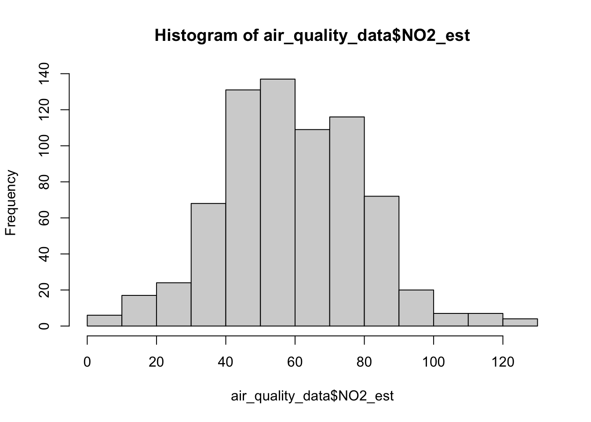
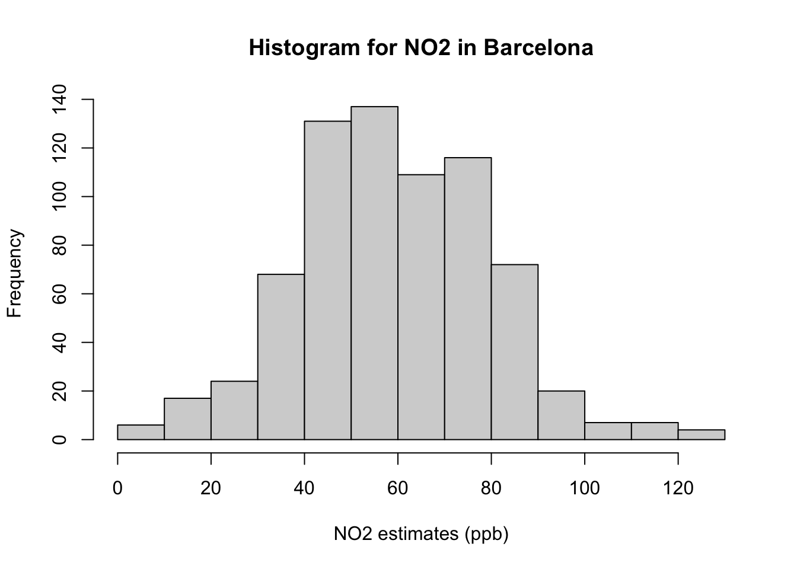
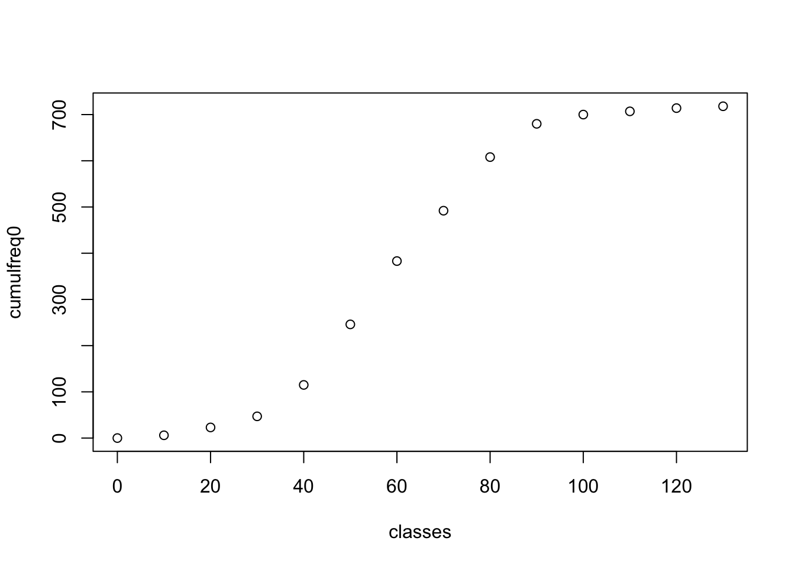
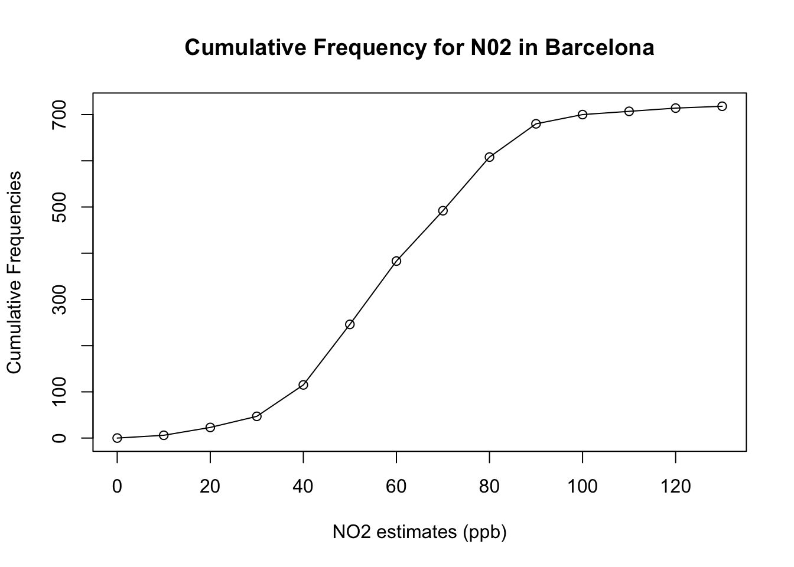

Week 3: Examining Data I
1 Frequency Distribution
1.1 Learning outcomes
By the end of this tutorial, you will be able to:
- Understand frequency distributions
- How to categorise continuous measurements in classes/categorise using the
cut() - How to compute a frequency table
- How to provide an interpretation to such outputs
- How to translate a frequency distribution table into a histogram and cumulative frequency plot
Warning
Before we do anything - make sure to have downloaded the dataset for this computer session by clicking [HERE]. It contains the file Barcelona_Air_Pollution_data.csv - this comma separated values (CSV) file contains the data needed to follow today’s tutorial.
Instructions In your computer, do the following:
- Create a new folder on your desktop and rename the folder GEOG0186
- Next, create a new sub-folder within GEOG0186 and rename it as Week 3.
- From the downloaded folder Dataset for Week 3, make sure to unzip and transfer ALL the datasets directly to the Week 3 folder.
1.2 Short Lecture Videos [OPTIONAL]
Jump straight to the coding exercise by clicking HERE if you want to skip this section!
1.2.1 What is statistics and data in general?
Definition 1: Statistics is a branch in the mathematical sciences that pertains to the collection, analysis, interpretation, and graphical presentation of data. The best thing about statistics is that it’s a highly applied branch of science which is applicable to many areas such as social science, politics, health (e.g., epidemiology), business & finance, environmental sciences and geography.
Statistics is broadly split into two main areas:
- Descriptive statistics, which focuses on describing the visible characteristics about a dataset
- Inferential statistics is more research-based, which focuses on making predictions (rather than stating facts) and testing hypothesis about a phenomenon.
Definition 2: A variable is any characteristics, numbered value, or quantity that can be measured or counted. A variable can also be referred to a data Item. A variable can be broadly classified as discrete, continuous or categorical variable.
We have provided two videos: the first which broadly explains why statistics as a subject is important; and the second explains in much details what statistics is as a subject, and what are the various data types.
[Theory] Why is statistics important? (Length: 13:21 minutes)
Watch on YouTube [LINK]
[Theory] What is statistics, and the types of variables? (Length: 31:17 minutes)
Watch on YouTube [LINK]
1.3 Analysing air pollution data in Barcelona
We will focus on descriptive statistics as an introduction introducing everyone to the absolute basics. Descriptive statistics is all about knowing the data types and finding the distribution, central tendency and variability in such data set. These four key words may sound intimidating – but trust me – it is very easy! Let us learn how to perform the following aspect of finding the distribution in RStudio using the air pollution data for Barcelona.
1.3.1 Setting Working Directory & Reading a CSV (Length: 00:13:54)
Let us import for following dataset Barcelona_Air_Pollution_data.csv into RStudio, and call this object air_ quality_data.
Remember - always make sure that your work directory is linked to your folder containing your data.
For Windows:
setwd("C:/Users/accountName/Desktop/GEOG0186/Week 3")For Macs:
setwd("/Users/accountName/Desktop/GEOG0186/Week 3")Now, import you the data set as follows:
air_quality_data <- read.csv("Barcelona_Air_Pollution_data.csv")You use the command View() see the full data viewer, or head() to see the first five rows of the dataset.
# see imported dataset
View(air_quality_data)head(air_quality_data)You will notice that the data contains six variables with the following information:
| Variable name | Variable Type | Information |
|---|---|---|
Location |
String/Text only | Name of location Eixample, Barcelona |
ReadingDate |
Date | Data collection date for air quality measures |
NO2_est |
Continuous | Measurements for Nitrogen dioxide (NO\(_2\)) (ppb) |
NO2_category |
Categorical | Health impacts (negligible/low/moderate/high) |
PM10_est |
Continuous | Measurements for Particulate matter (PM\(_10\)) |
PM10_category |
Categorical | Health impacts (negligible/low/moderate) |
Important
The NO2_est, for example, contains measurable items i.e., 718 observations for concentrations of ambient NO\(_2\) in Eixample area of Barcelona, and hence its a continuous variable. These estimates have been categorised in accordance with their health dangers i.e., negligible (\(<\) 10 ppb); low (11-50 ppb);
Let us begin to analyse NO2_est and NO2_category with Frequency Distributions
1.4 Frequency Distributions
1.4.1 Using the cut(), seq() & table() functions (Length: 00:17:56)
We use frequency distribution to analyse a set of continuous measurements. In data handling in this context, there are two outputs generated:
- Frequency, which tells us how often a particular result was obtained. From this we can calculate a percentage value which is referred to as Relative Frequency.
- Cumulative Frequency, this is a cumulative sum of the frequencies, which indicates how often a result was obtained that is less than a stated value in our collection of data. Again, from this we can also calculate a cumulative percentage value which is referred to as Cumulative Relative Frequency.
Suppose, we want to assess the 718 observations for air pollutant Nitrogen Dioxide (NO\(_2\)).
Let’s list the observations for Nitrogen Dioxide (NO\(_2\)) in Barcelona:
air_quality_data$NO2_est [1] 61 59 29 75 23 49 43 35 83 75 71 56 54 44 41 54 62 56
[19] 26 42 71 86 85 52 56 45 68 86 69 71 4 82 43 51 114 43
[37] 18 58 24 53 98 53 100 53 49 49 46 82 77 67 76 52 61 80
[55] 77 70 56 49 42 73 64 33 71 72 13 37 26 46 84 72 65 76
[73] 90 46 61 81 64 62 58 78 83 37 130 43 20 40 102 68 48 74
[91] 52 43 80 71 42 84 44 121 41 66 44 50 38 75 41 45 48 63
[109] 53 63 63 46 34 87 75 74 36 69 46 15 80 75 83 95 5 65
[127] 21 84 68 32 45 73 53 31 85 91 73 46 25 75 70 84 68 65
[145] 58 113 62 60 55 69 82 100 105 47 60 103 53 34 39 22 21 71
[163] 85 56 73 61 24 44 47 49 100 64 91 79 42 32 33 84 43 61
[181] 63 49 80 46 58 45 37 66 60 75 35 75 48 43 57 67 54 38
[199] 22 51 69 51 64 32 20 52 42 65 69 47 40 34 34 51 57 43
[217] 52 86 53 43 54 75 56 62 41 84 41 22 83 76 51 31 50 65
[235] 76 77 61 50 75 49 47 65 78 39 51 49 75 45 50 69 86 75
[253] 89 68 84 90 90 56 106 63 90 57 38 86 22 39 19 61 44 63
[271] 52 42 46 56 40 69 62 42 54 17 49 84 34 89 65 53 78 67
[289] 55 61 39 82 58 15 63 76 55 80 56 79 72 58 74 27 93 40
[307] 40 58 79 81 123 84 37 87 38 49 91 50 59 69 57 68 53 38
[325] 51 78 71 72 55 70 56 63 85 78 64 23 84 43 46 33 59 58
[343] 47 64 68 89 76 86 116 52 34 63 40 41 72 87 37 62 38 68
[361] 88 39 59 77 75 112 44 40 90 37 66 61 65 50 79 79 36 36
[379] 12 86 40 62 63 71 53 30 44 76 41 62 77 80 62 86 37 48
[397] 80 55 56 49 84 48 49 84 60 76 28 77 41 57 55 51 54 54
[415] 11 43 38 86 30 23 78 29 80 16 48 90 44 42 50 54 45 42
[433] 70 49 67 73 60 42 99 97 77 46 52 24 75 30 70 81 53 17
[451] 63 59 44 41 67 56 58 111 43 47 49 58 36 72 36 103 63 77
[469] 65 42 42 79 41 24 59 50 46 55 77 91 54 70 73 53 80 53
[487] 72 67 95 57 87 39 73 56 34 56 75 74 72 42 119 55 43 69
[505] 55 52 77 63 108 43 61 47 117 80 61 67 78 49 42 35 58 54
[523] 36 84 56 72 70 40 59 71 56 49 66 52 48 60 54 73 66 67
[541] 70 93 65 60 13 83 49 42 62 63 50 46 54 94 73 54 74 54
[559] 10 71 41 17 75 55 54 54 83 47 49 90 76 89 83 43 76 67
[577] 75 88 59 60 34 36 63 42 59 71 73 73 40 74 53 56 99 46
[595] 46 64 37 20 84 86 47 57 54 56 78 73 65 72 37 57 38 46
[613] 43 57 98 32 98 53 86 59 63 42 60 60 51 58 59 83 67 42
[631] 74 62 84 67 49 76 2 44 51 69 69 87 49 18 73 66 81 78
[649] 82 69 50 36 71 60 7 50 49 60 55 25 58 76 69 61 88 45
[667] 59 59 91 61 81 81 83 71 108 99 46 69 38 54 59 16 75 81
[685] 35 63 65 71 57 53 58 37 39 43 64 76 56 72 87 74 74 77
[703] 46 87 53 60 47 10 61 35 36 60 71 45 47 79 37 123In a list format it is quite difficult to make head or tail on what observations appear frequently and its distribution. To summarise this - it will be helpful to classify the information into Classes and then obtain the Frequency and Cumulative Frequency in a table. We call this table a Frequency Table.
The minimum value for NO\(_2\) is 2 and the maximum is 130. We can group the 718 observations into 13 classes using an interval of 10s e.g., 1-10, 11-20, 21-30, 31-40, 41-50, 51-60, 61-70, 71-80, 81-90, 91-100, 101-110, 111-120 and 121-130
Important
The way and manner you specify the classes and interval are up to you really. Here, 10 is being used for convenience.
The interval width is 10, we can generate sequence of number from 0 to 130, inclusively, to create the classes which in turn be used to group the 718 observations into 13 classes using the seq() and cut().
For example:
# using starting value as 0
# using highest value as 130
# using interval as 10
# specify in this order the lower, highest, interval value in seq() function
classes <- seq(0, 130, 10)
classes [1] 0 10 20 30 40 50 60 70 80 90 100 110 120 130The sequence of values are stored in the object called classes. Now, let us apply the cut() function to group the NO\(_2\) data accordingly. We can do this by generating a new variable called Groups.
# tell the cut() function to group NO2_est using the classes object
air_quality_data$Groups <- cut(air_quality_data$NO2_est, breaks=classes)
air_quality_data$Groups [1] (60,70] (50,60] (20,30] (70,80] (20,30] (40,50] (40,50]
[8] (30,40] (80,90] (70,80] (70,80] (50,60] (50,60] (40,50]
[15] (40,50] (50,60] (60,70] (50,60] (20,30] (40,50] (70,80]
[22] (80,90] (80,90] (50,60] (50,60] (40,50] (60,70] (80,90]
[29] (60,70] (70,80] (0,10] (80,90] (40,50] (50,60] (110,120]
[36] (40,50] (10,20] (50,60] (20,30] (50,60] (90,100] (50,60]
[43] (90,100] (50,60] (40,50] (40,50] (40,50] (80,90] (70,80]
[50] (60,70] (70,80] (50,60] (60,70] (70,80] (70,80] (60,70]
[57] (50,60] (40,50] (40,50] (70,80] (60,70] (30,40] (70,80]
[64] (70,80] (10,20] (30,40] (20,30] (40,50] (80,90] (70,80]
[71] (60,70] (70,80] (80,90] (40,50] (60,70] (80,90] (60,70]
[78] (60,70] (50,60] (70,80] (80,90] (30,40] (120,130] (40,50]
[85] (10,20] (30,40] (100,110] (60,70] (40,50] (70,80] (50,60]
[92] (40,50] (70,80] (70,80] (40,50] (80,90] (40,50] (120,130]
[99] (40,50] (60,70] (40,50] (40,50] (30,40] (70,80] (40,50]
[106] (40,50] (40,50] (60,70] (50,60] (60,70] (60,70] (40,50]
[113] (30,40] (80,90] (70,80] (70,80] (30,40] (60,70] (40,50]
[120] (10,20] (70,80] (70,80] (80,90] (90,100] (0,10] (60,70]
[127] (20,30] (80,90] (60,70] (30,40] (40,50] (70,80] (50,60]
[134] (30,40] (80,90] (90,100] (70,80] (40,50] (20,30] (70,80]
[141] (60,70] (80,90] (60,70] (60,70] (50,60] (110,120] (60,70]
[148] (50,60] (50,60] (60,70] (80,90] (90,100] (100,110] (40,50]
[155] (50,60] (100,110] (50,60] (30,40] (30,40] (20,30] (20,30]
[162] (70,80] (80,90] (50,60] (70,80] (60,70] (20,30] (40,50]
[169] (40,50] (40,50] (90,100] (60,70] (90,100] (70,80] (40,50]
[176] (30,40] (30,40] (80,90] (40,50] (60,70] (60,70] (40,50]
[183] (70,80] (40,50] (50,60] (40,50] (30,40] (60,70] (50,60]
[190] (70,80] (30,40] (70,80] (40,50] (40,50] (50,60] (60,70]
[197] (50,60] (30,40] (20,30] (50,60] (60,70] (50,60] (60,70]
[204] (30,40] (10,20] (50,60] (40,50] (60,70] (60,70] (40,50]
[211] (30,40] (30,40] (30,40] (50,60] (50,60] (40,50] (50,60]
[218] (80,90] (50,60] (40,50] (50,60] (70,80] (50,60] (60,70]
[225] (40,50] (80,90] (40,50] (20,30] (80,90] (70,80] (50,60]
[232] (30,40] (40,50] (60,70] (70,80] (70,80] (60,70] (40,50]
[239] (70,80] (40,50] (40,50] (60,70] (70,80] (30,40] (50,60]
[246] (40,50] (70,80] (40,50] (40,50] (60,70] (80,90] (70,80]
[253] (80,90] (60,70] (80,90] (80,90] (80,90] (50,60] (100,110]
[260] (60,70] (80,90] (50,60] (30,40] (80,90] (20,30] (30,40]
[267] (10,20] (60,70] (40,50] (60,70] (50,60] (40,50] (40,50]
[274] (50,60] (30,40] (60,70] (60,70] (40,50] (50,60] (10,20]
[281] (40,50] (80,90] (30,40] (80,90] (60,70] (50,60] (70,80]
[288] (60,70] (50,60] (60,70] (30,40] (80,90] (50,60] (10,20]
[295] (60,70] (70,80] (50,60] (70,80] (50,60] (70,80] (70,80]
[302] (50,60] (70,80] (20,30] (90,100] (30,40] (30,40] (50,60]
[309] (70,80] (80,90] (120,130] (80,90] (30,40] (80,90] (30,40]
[316] (40,50] (90,100] (40,50] (50,60] (60,70] (50,60] (60,70]
[323] (50,60] (30,40] (50,60] (70,80] (70,80] (70,80] (50,60]
[330] (60,70] (50,60] (60,70] (80,90] (70,80] (60,70] (20,30]
[337] (80,90] (40,50] (40,50] (30,40] (50,60] (50,60] (40,50]
[344] (60,70] (60,70] (80,90] (70,80] (80,90] (110,120] (50,60]
[351] (30,40] (60,70] (30,40] (40,50] (70,80] (80,90] (30,40]
[358] (60,70] (30,40] (60,70] (80,90] (30,40] (50,60] (70,80]
[365] (70,80] (110,120] (40,50] (30,40] (80,90] (30,40] (60,70]
[372] (60,70] (60,70] (40,50] (70,80] (70,80] (30,40] (30,40]
[379] (10,20] (80,90] (30,40] (60,70] (60,70] (70,80] (50,60]
[386] (20,30] (40,50] (70,80] (40,50] (60,70] (70,80] (70,80]
[393] (60,70] (80,90] (30,40] (40,50] (70,80] (50,60] (50,60]
[400] (40,50] (80,90] (40,50] (40,50] (80,90] (50,60] (70,80]
[407] (20,30] (70,80] (40,50] (50,60] (50,60] (50,60] (50,60]
[414] (50,60] (10,20] (40,50] (30,40] (80,90] (20,30] (20,30]
[421] (70,80] (20,30] (70,80] (10,20] (40,50] (80,90] (40,50]
[428] (40,50] (40,50] (50,60] (40,50] (40,50] (60,70] (40,50]
[435] (60,70] (70,80] (50,60] (40,50] (90,100] (90,100] (70,80]
[442] (40,50] (50,60] (20,30] (70,80] (20,30] (60,70] (80,90]
[449] (50,60] (10,20] (60,70] (50,60] (40,50] (40,50] (60,70]
[456] (50,60] (50,60] (110,120] (40,50] (40,50] (40,50] (50,60]
[463] (30,40] (70,80] (30,40] (100,110] (60,70] (70,80] (60,70]
[470] (40,50] (40,50] (70,80] (40,50] (20,30] (50,60] (40,50]
[477] (40,50] (50,60] (70,80] (90,100] (50,60] (60,70] (70,80]
[484] (50,60] (70,80] (50,60] (70,80] (60,70] (90,100] (50,60]
[491] (80,90] (30,40] (70,80] (50,60] (30,40] (50,60] (70,80]
[498] (70,80] (70,80] (40,50] (110,120] (50,60] (40,50] (60,70]
[505] (50,60] (50,60] (70,80] (60,70] (100,110] (40,50] (60,70]
[512] (40,50] (110,120] (70,80] (60,70] (60,70] (70,80] (40,50]
[519] (40,50] (30,40] (50,60] (50,60] (30,40] (80,90] (50,60]
[526] (70,80] (60,70] (30,40] (50,60] (70,80] (50,60] (40,50]
[533] (60,70] (50,60] (40,50] (50,60] (50,60] (70,80] (60,70]
[540] (60,70] (60,70] (90,100] (60,70] (50,60] (10,20] (80,90]
[547] (40,50] (40,50] (60,70] (60,70] (40,50] (40,50] (50,60]
[554] (90,100] (70,80] (50,60] (70,80] (50,60] (0,10] (70,80]
[561] (40,50] (10,20] (70,80] (50,60] (50,60] (50,60] (80,90]
[568] (40,50] (40,50] (80,90] (70,80] (80,90] (80,90] (40,50]
[575] (70,80] (60,70] (70,80] (80,90] (50,60] (50,60] (30,40]
[582] (30,40] (60,70] (40,50] (50,60] (70,80] (70,80] (70,80]
[589] (30,40] (70,80] (50,60] (50,60] (90,100] (40,50] (40,50]
[596] (60,70] (30,40] (10,20] (80,90] (80,90] (40,50] (50,60]
[603] (50,60] (50,60] (70,80] (70,80] (60,70] (70,80] (30,40]
[610] (50,60] (30,40] (40,50] (40,50] (50,60] (90,100] (30,40]
[617] (90,100] (50,60] (80,90] (50,60] (60,70] (40,50] (50,60]
[624] (50,60] (50,60] (50,60] (50,60] (80,90] (60,70] (40,50]
[631] (70,80] (60,70] (80,90] (60,70] (40,50] (70,80] (0,10]
[638] (40,50] (50,60] (60,70] (60,70] (80,90] (40,50] (10,20]
[645] (70,80] (60,70] (80,90] (70,80] (80,90] (60,70] (40,50]
[652] (30,40] (70,80] (50,60] (0,10] (40,50] (40,50] (50,60]
[659] (50,60] (20,30] (50,60] (70,80] (60,70] (60,70] (80,90]
[666] (40,50] (50,60] (50,60] (90,100] (60,70] (80,90] (80,90]
[673] (80,90] (70,80] (100,110] (90,100] (40,50] (60,70] (30,40]
[680] (50,60] (50,60] (10,20] (70,80] (80,90] (30,40] (60,70]
[687] (60,70] (70,80] (50,60] (50,60] (50,60] (30,40] (30,40]
[694] (40,50] (60,70] (70,80] (50,60] (70,80] (80,90] (70,80]
[701] (70,80] (70,80] (40,50] (80,90] (50,60] (50,60] (40,50]
[708] (0,10] (60,70] (30,40] (30,40] (50,60] (70,80] (40,50]
[715] (40,50] (70,80] (30,40] (120,130]
13 Levels: (0,10] (10,20] (20,30] (30,40] (40,50] (50,60] (60,70] ... (120,130]The observations have now been grouped to the classes. You can see this explicitly in the data viewer:
View(air_quality_data)
Important
What have we done here? The first value under the NO2_est column is 61, this value falls between 61-70 and hence under the Group column is was classed into the (60,70] interval by the cut() function. The second value in NO2_est is 59, and hence it was classed into the (50,60] interval, and so on. Note that the interval (60, 70] is the equivalent of saying: “any numbers greater than 60 (i.e., from 60.01 onwards but excluding 60 from that interval), and at the same time being less than or equal to 70, inclusively”. The round bracket ( represents any number greater than 60, whilst the square bracket ] closes the interval translating to any number being less than or equal 70 at the same time.
1.4.2 Computing the Frequency Distribution Table (Length: 00:27:53)
We can now generate our Frequency Table and hence determine Frequency and Cumulative Frequency of the ambient levels of NO\(_2\) in Eixample. We perform by using the table() function to tabulate the frequency of values that were grouped within an interval using the Group column.
table(air_quality_data$Groups)
(0,10] (10,20] (20,30] (30,40] (40,50] (50,60] (60,70] (70,80]
6 17 24 68 131 137 109 116
(80,90] (90,100] (100,110] (110,120] (120,130]
72 20 7 7 4 Using table() function only shows results in the Console - lets store the table results in a data frame object and call it frequency_results:
frequency_results <- data.frame(table(air_quality_data$Groups))
frequency_results Var1 Freq
1 (0,10] 6
2 (10,20] 17
3 (20,30] 24
4 (30,40] 68
5 (40,50] 131
6 (50,60] 137
7 (60,70] 109
8 (70,80] 116
9 (80,90] 72
10 (90,100] 20
11 (100,110] 7
12 (110,120] 7
13 (120,130] 4You can see column names Var1 and Freq. The Var1 is the original Groups columns which incidentally been renamed to Var1. The Freq column was generated from the table() function. We can rename the 1st and 2nd columns using colnames().
# rename first column t9 "Groups"
# rename second column to "Frequency"
# print new variable names in console using names() function
colnames(frequency_results)[1] <- "Groups"
colnames(frequency_results)[2] <- "Frequency"
names(frequency_results) [1] "Groups" "Frequency"frequency_results Groups Frequency
1 (0,10] 6
2 (10,20] 17
3 (20,30] 24
4 (30,40] 68
5 (40,50] 131
6 (50,60] 137
7 (60,70] 109
8 (70,80] 116
9 (80,90] 72
10 (90,100] 20
11 (100,110] 7
12 (110,120] 7
13 (120,130] 4Finally, we derive the Relative Frequency i.e., a percentage that is derived by dividing each frequency value from a group by the total number of observations (i.e., in this case: 718). We can add the relativeFreq column to the frequency_results table.
# generate a new column
frequency_results$relativeFreq <- frequency_results$Frequency/718
Note
Interpretation of frequency: The above table output show the frequency distribution of a set of concentrations for Nitrogen Dioxide measured in Eixample (in Barcelona). The group with the highest frequency value is 50-60ppb (i.e., 137) which accounts for 0.1908 (19.08%) of the data. These measurements typically fall under the category that’s considered to cause moderate harm to humans.
Let’s add the Cumulative Frequency and Cumulative Relative Frequency i.e., percentage using this cumulative summation code i.e., cumsum function below:
# add cumulativeFreq column to the data frame by adding Frequency using cumsum() function
frequency_results$cumulativeFreq <- cumsum(frequency_results$Frequency)
# add cumulativeRelFreq column to the data frame by adding Frequency using cumsum() function
frequency_results$cumulativeRelFreq <- cumsum(frequency_results$relativeFreq)
# print table results
frequency_results Groups Frequency relativeFreq cumulativeFreq cumulativeRelFreq
1 (0,10] 6 0.008356546 6 0.008356546
2 (10,20] 17 0.023676880 23 0.032033426
3 (20,30] 24 0.033426184 47 0.065459610
4 (30,40] 68 0.094707521 115 0.160167131
5 (40,50] 131 0.182451253 246 0.342618384
6 (50,60] 137 0.190807799 383 0.533426184
7 (60,70] 109 0.151810585 492 0.685236769
8 (70,80] 116 0.161559889 608 0.846796657
9 (80,90] 72 0.100278552 680 0.947075209
10 (90,100] 20 0.027855153 700 0.974930362
11 (100,110] 7 0.009749304 707 0.984679666
12 (110,120] 7 0.009749304 714 0.994428969
13 (120,130] 4 0.005571031 718 1.000000000
Warning
Thoughts to self: cumsum function… like WTF man?!
Note
Interpretation of cumulative frequency: The above table output show the cumulative frequency distribution ambient concentrations for Nitrogen Dioxide measured in Eixample (in Barcelona). We can see that there are 246 measurements or less with N0\(_2\) concentrations to be considered as negligible or low impact to health (<50ppb). This corresponds to 0.3426 (34.26%) of the data.
Conversely, we can also say - we can see that there are 472 measurements with N0\(_2\) concentrations more than 50ppb which is considered to be moderate or high impact to human health. This corresponds to 0.6573 (65.73%) of the data.
1.4.3 Graphical Representation of Frequency Data
The frequency table for Frequencies and Cumulative Frequencies can be graphical represented in a form of Histogram and Cumulative Frequency Plot (or Ogive Plot) respectively. Now, the data we need must be in its original form (i.e., not grouped) to plot the histogram, and we will need to use the classes object which we created earlier on from the seq() function so as to be used as breaks in the hist() plot function:
hist(air_quality_data$NO2_est, breaks = classes)
The above graph is not to the expected standards! It is missing key details such as the title and label for the x-axis. Let’s apply some cosmetics such as a main title and label for the x-axis
hist(air_quality_data$NO2_est, breaks = classes, main = "Histogram for NO2 in Barcelona", xlab = "NO2 estimates (ppb)")
Note
Interpretation of histogram: The above figure output describes the shape for ambient measures of NO\(_2\) in Barcelona which appears bell-shaped centered around 60ppb. Note that the frequency bars in this graph are essentially the same as the frequency values in the table.
Lastly, we then compute its cumulative frequency with the cumsum() function to support the interpretation. The coding needs a bit of hacking because we need to force a starting zero element for this graph to work.
cumulfreq0 <- c(0, cumsum(frequency_results$Frequency))
plot(classes, cumulfreq0)
Apply the appropriate cosmetics to output by adding the following:
- Main title
- Axis titles for x- and y-axis
- Connecting the points to form a full cumulative frequency/ogive plot
cumulfreq0 <- c(0, cumsum(frequency_results$Frequency))
plot(classes, cumulfreq0, main="Cumulative Frequency for N02 in Barcelona", xlab="NO2 estimates (ppb)", ylab="Cumulative Frequencies")
lines(classes, cumulfreq0) 